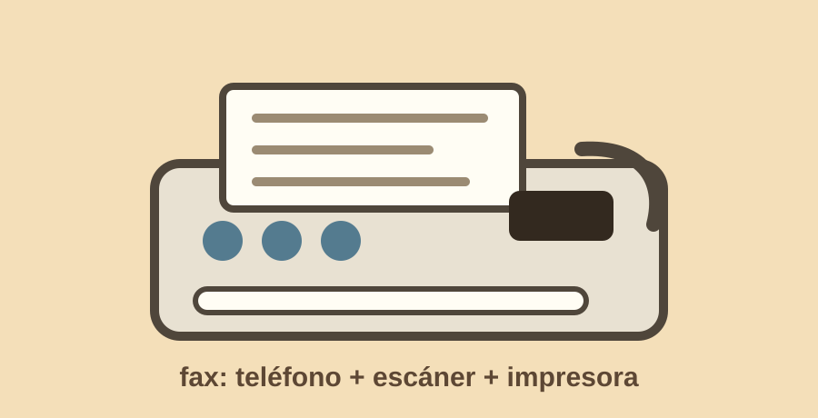

Semana 7
Objeto extraño: fax
El objeto que elegí fue un fax. Al verlo, lo primero que pensé fue que servía para hacer llamadas e imprimir cosas. No le veía mucho sentido a tener esas dos funciones juntas.

Lo que yo creía
Pensé que era como un teléfono mezclado con impresora. Me imaginé que uno llamaba a alguien y de alguna forma el aparato imprimía algo.
Uso real
Un fax escanea un documento, lo convierte en señales que viajan por la línea telefónica y otro fax lo recibe para imprimir una copia. Mezcla teléfono, escáner, envío e impresión.
Hoy se siente extraño porque ya mandamos documentos por correo, chats o plataformas. Pero el fax muestra cómo antes la interacción resolvía un problema real: enviar papel físico a distancia usando infraestructura telefónica.